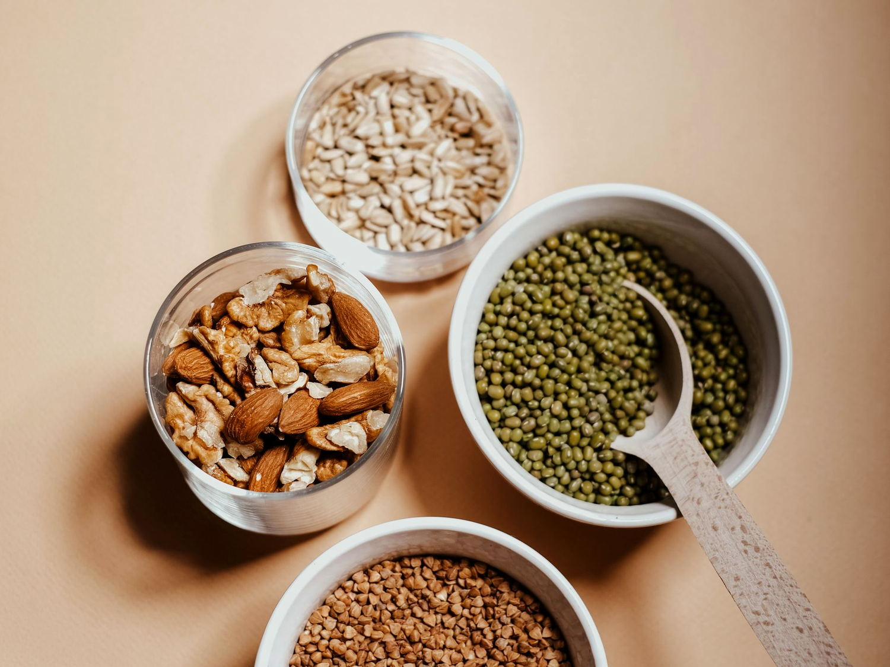

人体需要 20 余种矿物质与 13 种维生素。它们的名字你多半听过， 但真正决定你是否缺乏的，是吸收率、拮抗关系与你的生活方式—— 而不只是「吃没吃到」。

点击任意一行展开完整条目：生理作用、缺乏表现、高危人群与食补方向。
「推荐摄入量」为一般健康成人的参考值，实际需求随年龄、性别、生理状态与疾病而变化。矿物质之间存在竞争与协同（例如锌与铜、钙与镁、铁与维生素 C），单独大剂量补充某一种，常常会打破平衡。优先通过食物获取，补充剂请在专业指导下使用。